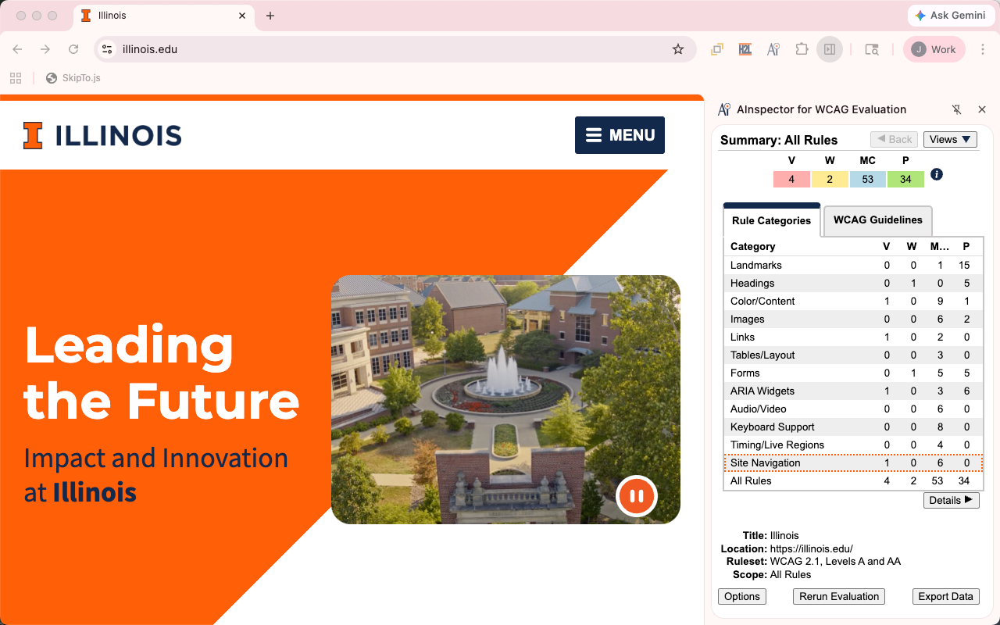

Browser Extension

AInspector Version 5.0 for WCAG Evaluation Released!
Purpose
The purpose of AInspector for WCAG Evaluation is to help people understand the W3C Web Content Accessibility Guidelines (WCAG). To accomplish this, it provides detailed evaluation data that not only indicate pass or fail results for some rules, but also whether manual checking is needed for certain other rules that cannot be programmatically evaluated.
AInspector is different from other tools in the number of rules that result in manual checking. Manual checks are important to help people understand that there is more to accessibility requirements than can be understood by only focusing on rules that either pass or fail, and that even if there are no failing rules there are additional requirements that need to be understood to ensure accessibility.
For people learning about accessibility, AInspector gives them an understanding of the accessibility considerations needed for a specific web page. For experienced accessibility professionals, it helps them ensure they have crossed their t’s and dotted their i’s on accessibility.
New Features in Version 5
- New ruleset options to emulate aXe and WAVE/poptech rules.
- New rules:
New Features in Version 4
- Support for Side Panel in Chrome, Edge and Opera Web Browsers.
- Updated in version 4.1 JSON and CSV export formats for greater compatibility with 3.x export formats.
- Updated to OpenA11y Evaluation Library 2.2, including updated color contrast, table and titling rules.
Features in Version 3
-
Updated to use OpenA11y Evaluation Library 2.0 to support:
- Web Content Accessibility Guidelines 2.1
- Web Content Accessibility Guidelines 2.2
- Accessible Rich Internet Applications 1.2
- Accessible Rich Internet Applications 1.3
- ARIA in HTML
- Improved accessible name computation
- Improved table rules
- Updated keyboard rules
- Updated video and audio rules
- Fixed minor bugs in many other rules
- Rule information on OpenA11y Evaluation Library website
- New ruleset and rule scope filtering options.
- New “First Step” Ruleset option for people just starting out with accessibility.
- Improved element information in Rule Results View.
- Improved element highlighting.